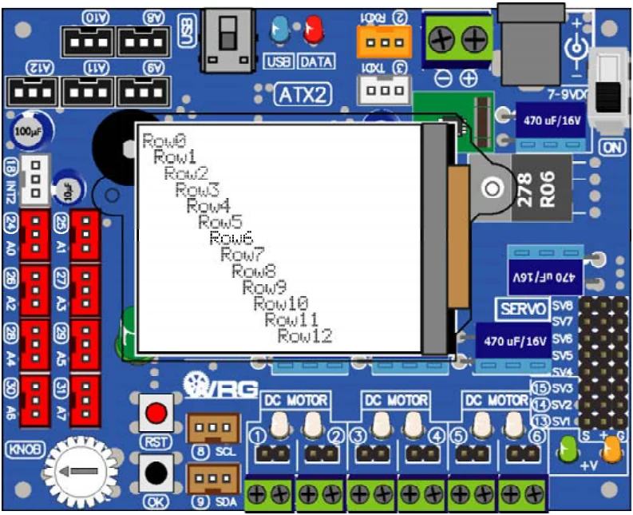

Activity 1-2 Multipleline display
The GLCD screen of ATX2 board size is 128 x 160 dots. Show the character with 5 x 7 dots resolution by 21 characters 16 lines. Developer can define the position of each line and column on the screen by using glcd function of the ipst.h library file.
Additionally, glcd function provides the special characters for setting the display position instead to use the position number. It will be show in the Listing A1-2.
(A1.2.1) Open the Arduino 1.0.7 software. Create the new sketch file. Type the code following the Listing A1-2. then save as the sketch.
#include <ATX2.h> // Include main library
int i;
void setup()
{
glcdMode(1); // Set orientation mode 1 (90 deg)
glcdFillScreen(GLCD_WHITE); // Set background color as white
setTextColor(GLCD_BLACK); // Set text color as black
setTextBackgroundColor(GLCD_WHITE); // Set text background as white
/ / Loop 13 times for displaying messages
for (i=0;i<13;i++)
{
glcd(i,i,"Row %d ",i); // Display messages on the screen
}
}
void loop()
{}Code description
This sketch add 3 functions of GLCD displaying as follows :
1. glcdFillScreen - Set the screen background color function
2. setTextColor - Set the text color function
3. setTextBackground - Set the text background color function
After screen setting already, the sketch will send the Row message following line number that get from increase the value of i variable and also shift the position by using i variable value.
Thus, first line will be displayed Row0 message at column 0. Next on the line 2 will show Row1 message respectively until line 12. It will be show Row 12 message at the column 12.
Listing A1-2 : ATX2_GLCDmultipleline.ino; the sketch file of Arduino for sending message to display on the GLCD screen of the ATX2 board in multiline.
(A1.2.2) Apply the supply voltage to the ATX2 board and turn on power. Connect the USB cable between ATX2 board and computer.
(A1.2.3) Compile and upload the sketch to ATX2 board by clicking on the
button or choose at menu File > Upload
At the ATX2 screen, it shows Row0 to Row15 message on each line respectively. Summary, wide orientation of GLCD screen could be display 13 lines maximum with standard text size.

Original manual, pages 100–101